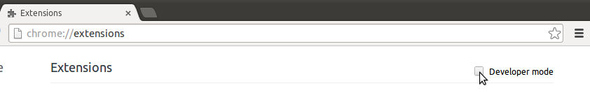
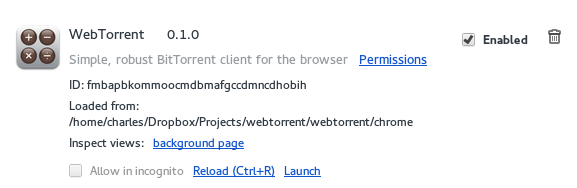

<!-- Thanks for the email. I'm glad you like the WebTorrent concept. We could definitely use some help with documentation on a few fronts. First, the "getting started" experience for new developers isn't very good right now. Having a simple, straightforward guide for how to install node.js, git clone the project, install dependencies, etc. would go a long way to bringing in new contributors. We could put these on the webtorrent wiki here: https://github.com/feross/webtorrent/wiki We should also add the explanation of what webtorrent is and what the plans are from https://github.com/feross/webtorrent/issues/39, and expand on it and clarify where necessary. Would be great to have another set of eyes to fix the parts that aren't clear enough. Next, there are lots of packages that webtorrent depends on. There's a partial list here: https://github.com/feross/webtorrent#npm-modules Most of these were written by me, so we have access to update these docs. Some of the docs are pretty good as is, but some, like https://github.com/feross/bittorrent-swarm are lacking. If we could fully document the API of these packages, that would be awesome. Lastly, we need a webtorrent website. I'm going to add that soon. I want a "docs" section on the site to contain all the docs for each module that webtorrent uses so people can learn about each piece. So the docs will hopefully have lots of visibility and help bring in new developers. If you have other ideas, let's talk. Thanks for any help you provide -->
https://github.com/feross/webtorrent/issues/39
Offical guides:
Most platform repositories are usually outdated, so it is better to build Node from source. Start by installing the prerequsites. On Ubuntu:
sudo apt-get install git-core build-essentialAlso install python if you don't already have it. Mac users should be set already. Clone the official repository:
git clone https://github.com/joyent/node.git
git checkout v0.10.26Replace the above with the latest stable release. Stable releases are even-numbered. For example, v0.11.12 is unstable.
cd node
./configure
make
sudo make installMuch of Node's usefulness hinges on npm, a package manager for Node, similar to Rubygems or CPAN. it is now included with Node.
Start by forking the repository. Then clone your forked repository and add upstream.
git clone https://github.com/[your_username]/webtorrent.git
git remote add upstream https://github.com/feross/webtorrent.gitIf you come back later and there are any changes, fetch them and merge them when ready:
get fetch upstream
git merge upstream/masterNow, install the dependancies:
npm installThis will install a list of dependant Node modules used by this project from npm. The list is included in package.json.
There are a couple of commands for building different parts of the project. You can see them in package.json.
"build": "npm run build-css && npm run build-js",
"build-css": "stylus --use nib css/main.styl --compress --out chrome/ && ./bin/post-build.js",
"build-js": "browserify --debug . > chrome/bundle.js",
"prepublish": "npm run build",
"start": "npm run build && ./bin/start.js",
"test": "tape test/*.js",
"watch": "npm run watch-js & npm run watch-css",
"watch-css": "stylus --use nib css/main.styl --out chrome/ --watch",
"watch-js": "watchify . --outfile chrome/bundle.js --debug --verbose"To build the chrome app and install it, simply run npm start
This will also run bin/start.js which will try to add the app into chrome. this could fail for several reasons:
If this happens, and chrome/bundle.js and chrome/main.css exist, you can ignore the error install it manually
by dragging the chrome/ directory into the chrome://extensions page. Make sure you have enabled developer mode
in Chrome first by checking the box at the top of chrome://extensions.

Use the watch command to automatically build when changes are made.
Use the Reload (Ctrl-R) button to manually reload the app after changes are made (if npm start is failing).

Now you are ready to contribute! Commit changes and send a pull request. However, much of the functionality has been intentionally abstracted into independant node modules. A description of these modules is available below. See each package for more information.
Module | Description
---------------------------------------------------------------------------------- | -----------------------------------------------------------------------------------------------------
webtorrent (main repo) | Browser torrent client.
bittorrent-protocol | Implementation of the core BitTorrent protocols.
-[plugin: utmetadata](https://github.com/feross/utmetadata) | Core BitTorrent protocol for allowing peer sharing of file metadata, which is used by magnet links.
-plugin: encryption (todo) | Create connections peers using encryption.
-plugin: peer exchange protocol (PEX) (todo) | Core BitTorrent protocol for sending data between peers.
-plugin: µTP (todo) | Alternative, UDP-based BitTorrent protocol for mitigating network congestion.
-plugin: UPnP and NAT-PMP port forwarding (todo) | Universal Plug-and-Play and NAT Port Mapping protocols for handling communication through NATs.
-plugin: webseed support (todo) | BitTorrent protocol for downloading via HTTP as well as from peers.
bittorrent-swarm | Handles creating and listening for peer connections, handshakes, and tracking traffic.
bittorrent-dht (work-in-progress) | Distributed hash table system (BitTorrent's distributed tracker).
magnet-uri | Parser for magnet links.
parse-torrent | Parser for .torrent files.
buffer | Browser implementation of Node buffers.
chrome-net | Browser implementation of Node net API(TCP) for Chrome apps.
chrome-dgram | Browser implementation of Node dgram API(UDP) for Chrome apps.
chrome-portfinder | Browser implementaiton of portfinder for Chrome apps.
drag-drop | Browser wrapper for HTML5 drag-and-drop functionality.
webtorrent-protocol (todo) | New protocol based off core BitTorrent protocols running over WebRTC.
webtorrent-dht (todo) | Implementation of DHT system running over WebRTC.
webtorrent-swarm (todo) | Implementation of swarm protocol running over WebRTC.
webtorrent-bootstrap (todo) | ??
webworker-pool (todo) | ??
webtorrent-verifier (todo) | Verify downloaded files are complete and uncorrupted.
sdp-compress (todo) | Session Description Protocol for multimedia session communication.
webtorrent-chrome (todo) | ??
-PEX -µTP -UPnP -NAT-PMP -webseeding -DHT -Magnet link
SDP - http://tools.ietf.org/html/rfc3485
[WebRTC]
Intro to torrent protocols How bittorrent works primary protocol torrent files magnet links DHT swarm
Intro to WebRTC
Improve dependant package docs: bittorrent-swarm bittorrent-dht probably more <!----TODO----> Intro to streams in JS https://github.com/substack/stream-handbook